Sprite upgrade — before / after
The full improvement pass on the deterministic atlas generator: team-color livery,
class-defining silhouettes, deeper shading, grounded shadows, autotiled roads / rivers / coasts,
rounded (de-cubed) masses — and every faction ramp now mirrors
commander_visuals.gd exactly. Annotate anything you want changed.
DETERMINISTIC — 2 RUNS, IDENTICAL BYTES
ATLAS CONTRACT UNCHANGED 1152x320 / 896x320
EXACT COMMANDERVISUALS THEMES x5
RUFF CLEAN
AUTOTILES = NEW OPT-IN ASSET
1 · The map
Same authored demo scene, both generations. The island now has a coastline,
the roads connect into a network, and the river flows north–south under the bridge.
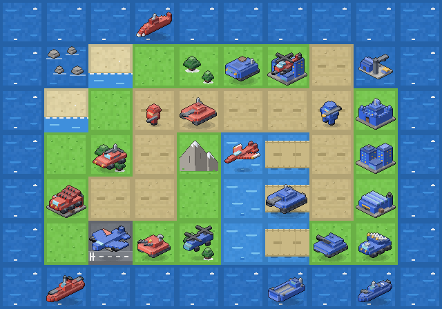
Before

After
2 · Units — meridian row, same columns
infantry · tank · md tank · artillery · anti-air · apc · bomber · battleship · lander
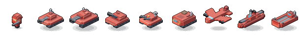
Before — paint-dipped, cubic, stub guns
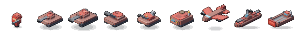
After — livery, octagonal turrets, real weapons
What changed on every unit
- Livery, not paint-dip — chassis and ship hulls wear a desaturated faction tint (
hullramp, 50% toward chassis grey); pure faction color stays on the identity surfaces: turret crowns, truck cabs, aircraft wings, ship decks, the lander’s bow ramp. - Class-defining weapons — longer tank / md-tank cannons with muzzle brakes, the artillery howitzer climbs two steps higher, anti-air’s quad tubes rake skyward under a bigger radar, the infantry rifle moved to shoulder height.
- De-cubed —
Model.chamfer/domecut corner columns: octagonal turrets and cabs, rounded bomber nose and copter holds. - Deeper shading — stronger top/side contrast, ground-contact occlusion, and a vertical depth gradient on tall masses.
- Shadows — ships sit in a flat displacement shadow with foam hugging the waterline; air units hover higher over a small detached shadow.
- Antenna diet — gun tanks lost their whips; APC keeps a tall comms whip (amber tip), recon a short one, ship masts all differ.
3 · Properties — the roof carries the flag
city · base · hq · airport · port (meridian row). Walls went neutral concrete and stone;
ownership reads from faction-colored roofs, tower caps, awnings and banners — the classic convention.
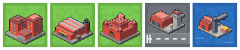
Before — all-red masses
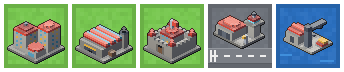
After — grey walls, faction roofs
4 · Faction colors — now exactly the game’s
Every row’s ramp is the
FactionTheme (color / dark / light) from
grid_commanders/scenes/common/commander_visuals.gd, converted x255 — neutral’s slate theme included.
Row order mirrors SideIdentity._ROW_FOR_KEY.| Row | Faction | Color | Dark | Light |
|---|---|---|---|---|
| 0 | neutral — No Commander | #606a71 |
#3c444a |
#828c92 |
| 1 | meridian — Meridian Coalition | #db4a3b |
#a93631 |
#ef725f |
| 2 | aurora — Aurora Compact | #3865d8 |
#2b4ea8 |
#6d8ce8 |
| 3 | iron — Iron Dominion | #4a5258 |
#2f363b |
#6b747b |
| 4 | verdant — Verdant League | #2c8636 |
#1d6127 |
#4fa85a |
Open question — neutral vs iron. Both are slates now (neutral ~20% lighter).
For properties this is the classic “unowned grey city” and works; neutral never fields units in
real matches (team 0 owns only properties), and the game’s own principle is “faction first, never
colour alone”. If you still want more separation on the unit rows, annotate here and I’ll nudge
neutral lighter for units while keeping properties on the exact theme.
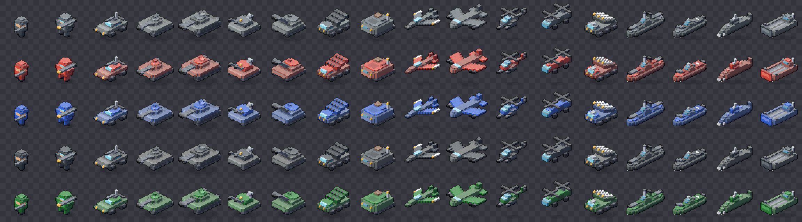
Units atlas — 18 units x 5 faction rows (2x)
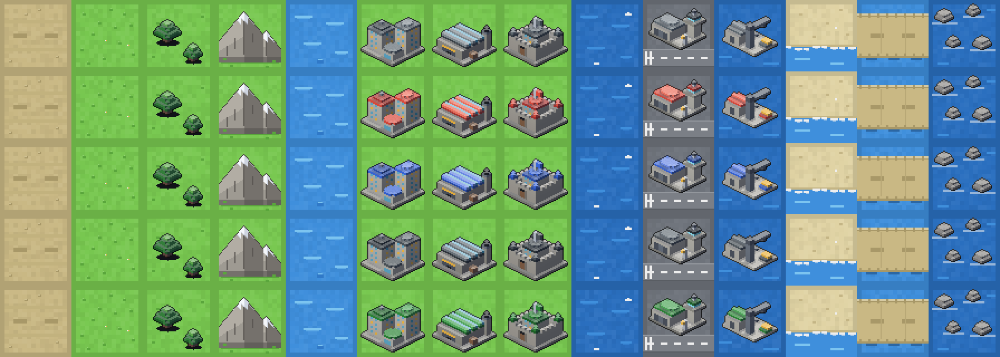
Terrain atlas — 14 tiles x 5 rows (2x)
5 · Autotiles — the opt-in upgrade path
New
spritegen/autotile.py: 16-variant N/E/S/W connection sets, exported under
out/autotiles/. The fixed 14-column terrain atlas is untouched (still a drop-in); these are
extra sheets the game can adopt so roads turn, rivers flow any direction, and sea meets land with a real
shoreline. The demo map above already composes from them. Sheets are masks 0–15 row-major (N=1 E=2 S=4 W=8).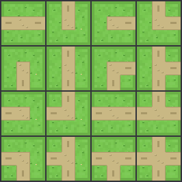
Roads
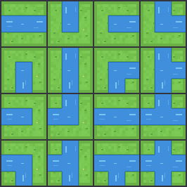
Rivers
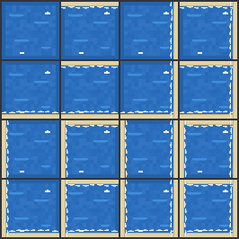
Coast (sea vs land edges)
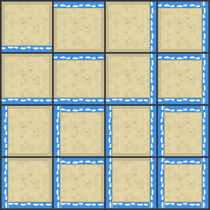
Shoals (surf per water edge)
6 · What to review
- Does the livery balance feel right — enough team color at map scale, or push accents further?
- Neutral vs iron unit rows (section 4’s open question).
- Any unit whose silhouette still doesn’t read at 1x on
preview_map.png? - Should the game adopt the autotiles? If yes, I’ll plan the grid_commanders side (TileSet wiring in
BattleView) next.
Annotate any sprite or line above, or queue feedback — I’m polling this session.